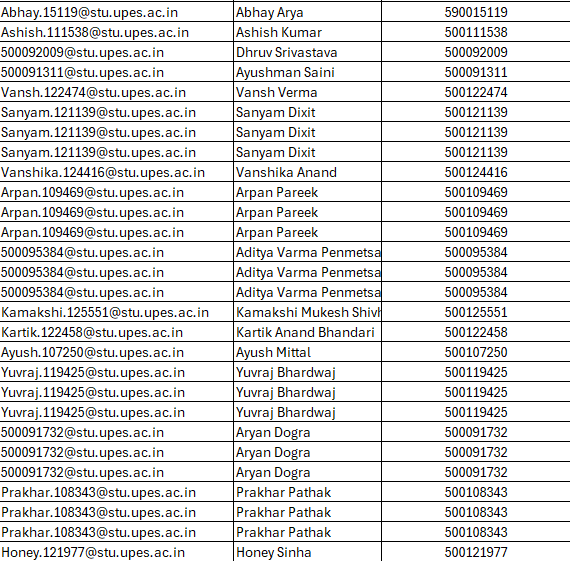
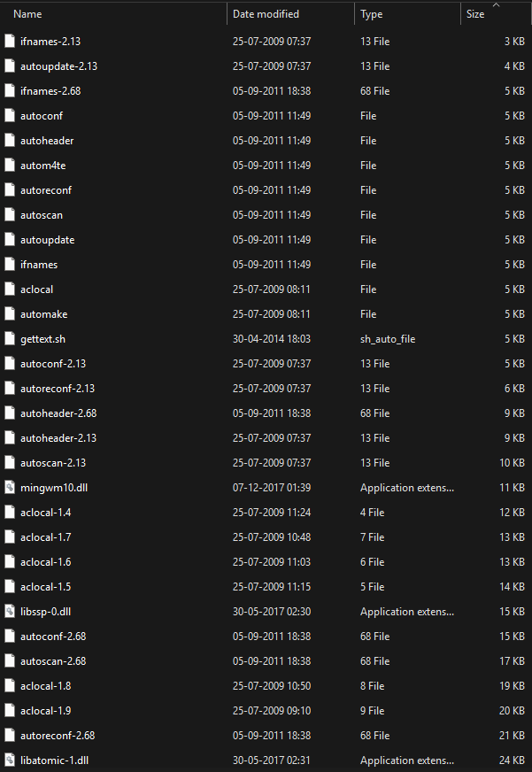
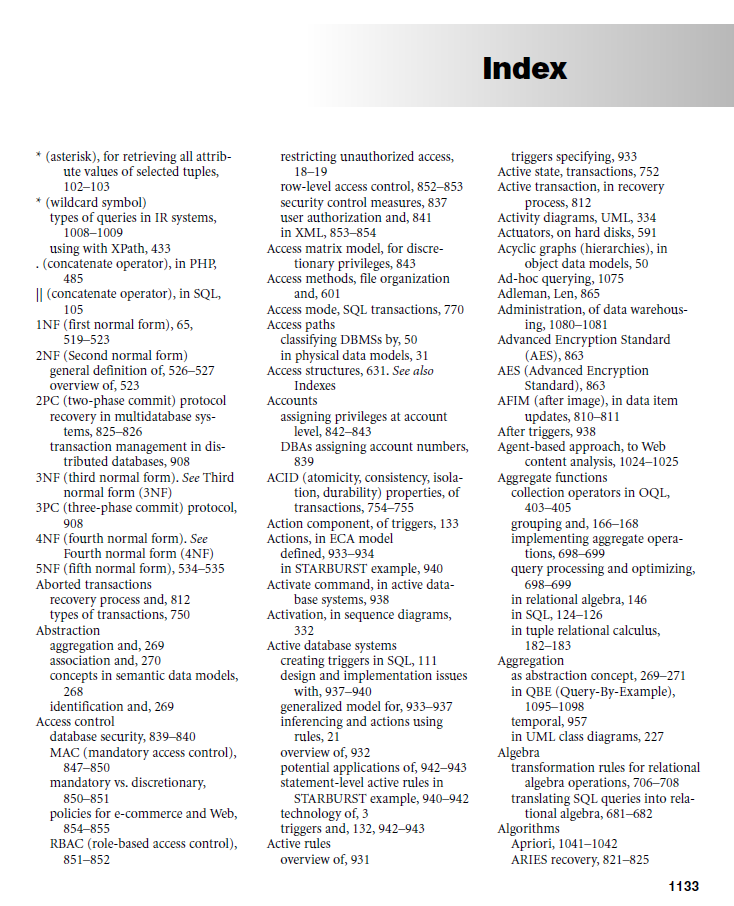

File Organization and Indexing
Unit III: Storage & Indexing
Database Systems - MTech First Semester
Cloud & Software Operations Cluster | SOCS | UPES
Dr. Mohsin Dar
Assistant Professor
What We'll Learn Today
- Understand different file organization techniques
- Learn the concept and importance of indexing
- Explore various types of indexes
- Analyze index performance through practical calculations
- Compare different file organization methods
What is File Organization?
File Organization refers to the way records are arranged and stored in a file on secondary storage devices.
The organization of data files impacts:
- Access Time: How quickly we can retrieve records
- Storage Efficiency: How much space is utilized
- Update Performance: Speed of insertions, deletions, and modifications
- Query Performance: How efficiently we can search for data
Types of File Organization
1. Heap File (Unordered)
Records are stored in the order they are inserted - no particular ordering.
Unordered File Organization Details
- Records are typically added at the end of the file, without following any specific order.
- This insertion method allows only linear search, resulting in slower search times.
- Despite slow searches, maintenance including insertion and deletion is simpler.
- No reorganization of the entire file is needed, making maintenance easier.
- If file is unordered, number of block accesses required to reach correct block which contains the desired record is O(n), where n is the number of blocks.
Unordered File Organization Example

✓ Advantages: Fast insertion (O(1)), simple structure, no reorganization needed
✗ Disadvantages: Slow search (O(n) - linear scan), inefficient for queries
2. Sequential File (Ordered)
Records are stored in order based on a key field.
Ordered File Organization Details
- All the records in the file are ordered on some search key field.
- Here binary search is possible. (Similar to searching for a page in a book - you can jump to the middle, then decide whether to go forward or backward, significantly reducing search time)
- Maintenance (insertion & deletion) is costly, as it requires reorganization of entire file.
- Important Note: We will get binary search only if we are using that key for searching on which indexing is done, otherwise it will behave as unsorted file.
- If file is ordered, number of block accesses required to reach correct block which contains the desired record is O(log2n), where n is the number of blocks.
Ordered File Organization Example

✓ Advantages: Efficient for range queries, binary search possible (O(log2n))
✗ Disadvantages: Expensive insertions/deletions, requires reorganization
3. Hash File
Records are distributed across buckets using a hash function.
✓ Advantages: Fast exact-match queries
✗ Disadvantages: Poor for range queries, collisions
File Organization Comparison
| Organization |
Search |
Insert |
Delete |
Range Query |
| Heap |
O(n) |
O(1) |
O(n) |
O(n) |
| Sequential |
O(log n) |
O(n) |
O(n) |
Efficient |
| Hash |
O(1) avg |
O(1) avg |
O(1) avg |
Poor |
Why Do We Need Indexing?
Foundation: Relational Databases and Set Theory
- Relational databases are based on set theory.
- In set theory, the order of elements is unimportant, similarly in database tables.
- However, in practical implementation, element order in tables is often specified.
- Various operations such as search, insertion, and deletion are influenced by the order of elements in the tables.
- Elements in a table can be stored in two ways: sorted (ordered) or unsorted (unordered).
Problem: Searching through millions of records sequentially is extremely slow!
Consider a database with 1 million records:
- Without Index: Average 500,000 record accesses
- With Index: Approximately 20 record accesses (using B+ tree)
Real-World Analogy
An index in a database is like an index in a book:
- Book index: Find page numbers quickly without reading entire book
- Database index: Find records quickly without scanning entire file
Example: Book Index

Just like a book's index helps you find topics quickly, a database index helps locate records efficiently.
What is an Index?
Index: A data structure that improves the speed of data retrieval operations on a database table at the cost of additional storage space and slower writes.
Index Structure
An index consists of:
- Search Key: Attribute(s) used to look up records
- Data Pointer: Reference to the actual data record location
Search Key Value
→
Pointer to Record
Types of Indexes
Based on File Organization:
1. Primary Index
Built on the ordering key field of an ordered file. One index entry per data block.
2. Clustering Index
Built on non-key ordering field. Multiple records may have the same value.
3. Secondary Index
Built on any non-ordering field. Can be on key or non-key fields.
Primary Index in Detail
Primary Index: A sparse index on the ordering key field of a sequentially ordered file.
Characteristics:
- Data file must be ordered on a key field
- One index entry for each block (not each record)
- Index entry = (Key value of first record in block, Pointer to block)
- Significantly smaller than data file
- Enables binary search on blocks
Structure:
| Index Entry |
Components |
| K(i) |
Key value of first record in block i |
| P(i) |
Pointer to block i |
Primary Index: Problem Statement
Given:
- Number of records: r = 30,000
- Block size: B = 1,024 bytes
- Record length: R = 100 bytes
- Ordering key field length: V = 9 bytes
- Block pointer size: P = 6 bytes
- Records are fixed-size and unspanned
Find:
Design and analyze the primary index for this file.
Step 1: Calculate Blocking Factor (bfr)
Blocking Factor (bfr): Number of records that can fit in one block
bfr = ⌊Block Size / Record Size⌋ = ⌊B / R⌋
Calculation:
bfr = ⌊1,024 / 100⌋ = ⌊10.24⌋ = 10 records/block
Interpretation: Each data block can store exactly 10 records. The remaining 24 bytes in each block are wasted (internal fragmentation).
Step 2: Calculate Number of Blocks (b)
Number of Blocks: Total blocks needed to store all records
b = ⌈Total Records / Blocking Factor⌉ = ⌈r / bfr⌉
Calculation:
b = ⌈30,000 / 10⌉ = 3,000 blocks
Storage for Data File:
Total Space = 3,000 blocks × 1,024 bytes = 3,072,000 bytes ≈ 3 MB
Step 3: Calculate Index Entry Size
Index Entry Components:
- Search Key Value: V = 9 bytes
- Block Pointer: P = 6 bytes
Index Entry Size = V + P
Calculation:
Index Entry Size = 9 + 6 = 15 bytes
Each index entry will store:
[ Key of First Record | Block Pointer ]
[ 9 bytes | 6 bytes ] = 15 bytes total
Step 4: Calculate Index Blocking Factor (bfri)
Index Blocking Factor: Number of index entries per block
bfri = ⌊Block Size / Index Entry Size⌋ = ⌊B / (V + P)⌋
Calculation:
bfri = ⌊1,024 / 15⌋ = ⌊68.27⌋ = 68 entries/block
Interpretation: Each index block can store 68 index entries.
Utilized space per index block: 68 × 15 = 1,020 bytes
Wasted space per index block: 1,024 - 1,020 = 4 bytes
Step 5: Calculate Number of Index Blocks (bi)
Number of Index Entries: One entry per data block = 3,000 entries
bi = ⌈Number of Index Entries / bfri⌉ = ⌈b / bfri⌉
Calculation:
bi = ⌈3,000 / 68⌉ = ⌈44.12⌉ = 45 index blocks
Storage for Index File:
Index Space = 45 blocks × 1,024 bytes = 46,080 bytes ≈ 45 KB
Search Performance Comparison
Without Primary Index (Linear Search):
Average block accesses: b / 2 = 3,000 / 2 = 1,500 blocks
Worst case: 3,000 blocks
With Primary Index (Binary Search on Index):
Index search: ⌈log2(45)⌉ = 6 block accesses
Data block access: 1 block access
Total: 6 + 1 = 7 block accesses
Performance Improvement
Speedup: 1,500 / 7 = 214× faster on average!
Storage Space Analysis
| Component |
Size |
Percentage |
| Data File |
3,072,000 bytes (≈3 MB) |
98.5% |
| Primary Index |
46,080 bytes (≈45 KB) |
1.5% |
| Total |
3,118,080 bytes |
100% |
Key Insight: The index uses only 1.5% additional space but provides 214× performance improvement for searches!
Space-Performance Tradeoff: This is an excellent tradeoff - minimal space overhead for massive performance gains.
Primary Index Characteristics
Advantages:
- ✓ Dramatically faster search operations
- ✓ Small storage overhead (sparse index)
- ✓ Efficient for range queries on ordering key
- ✓ Binary search possible on index
Disadvantages:
- ✗ Data file must remain sorted
- ✗ Insertions/deletions are expensive (require reorganization)
- ✗ Only one primary index per file (on ordering key)
- ✗ Index must be updated when data changes
Dense vs Sparse Indexes
Dense Index
Contains an index entry for every search key value in the data file.
- One entry per record
- Larger space requirement
- Can determine record existence from index alone
Sparse Index
Contains index entries for only some of the search key values.
- One entry per block (like primary index)
- Smaller space requirement
- Data file must be ordered
- Our example uses a sparse index!
Practical Implementation Considerations
When to Use Primary Index:
- Data is naturally ordered (e.g., employee IDs, timestamps)
- Frequent searches on the ordering key
- Range queries are common
- Insert/update frequency is low to moderate
Maintenance Considerations:
- Insertion: May require reorganization if no space in block
- Deletion: May leave blocks underutilized
- Updates: If key changes, may need reorganization
- Periodic Reorganization: Needed to maintain efficiency
Key Takeaways
- File organization determines how records are physically stored
- Indexes are auxiliary structures that speed up data retrieval
- Primary index is a sparse index on an ordered file's key field
- Primary index provides massive performance gains with minimal space overhead
- Trade-off: faster searches vs. slower updates
In Our Example:
• 30,000 records → 3,000 data blocks
• Primary index → 45 index blocks
• Search improvement: 1,500 accesses → 7 accesses (214× faster)
• Space overhead: Only 1.5% additional storage
Operations on Primary Index
1. Search Operation
Algorithm:
- Perform binary search on index file to find appropriate index entry
- Follow block pointer to data block
- Search within the block for the record
Time Complexity: O(log2 bi) + 1 block accesses
2. Insertion Operation
Algorithm:
- Find appropriate block using index
- If block has space, insert record maintaining order
- If block is full, reorganize (overflow handling)
- Update index if first record of block changes
Challenge: May require data reorganization
3. Deletion Operation
Algorithm:
- Find record using index
- Delete record from data block
- Update index if first record of block was deleted
- Handle underflow if necessary
Example: Searching for a Record
Scenario: Search for employee with ID = 15,750
Step 1: Binary Search in Index
Index has 45 blocks with 68 entries each
Binary search iterations: ⌈log2(45)⌉ = 6 accesses
Find: Index entry with key ≤ 15,750
Step 2: Access Data Block
Follow pointer from index to data block
Block contains records starting with key 15,741
1 block access
Step 3: Search Within Block
Block has 10 records (bfr = 10)
Can use binary search or linear scan
Find employee record with ID = 15,750
Total: 7 block accesses vs 1,500 average without index!
What if the Index Becomes Too Large?
Problem: If the index itself becomes very large (doesn't fit in memory), we need multiple disk accesses to search the index!
Solution: Multilevel Indexes
Create an index on the index!
Level 2 Index
(Index on Index)
↓
Level 1 Index
(Primary Index)
↓
Data File
(Actual Records)
Preview: We'll study B-Trees and B+ Trees in upcoming lectures - these are sophisticated multilevel index structures!
Guidelines for Index Design
Choose Primary Index When:
- ✓ Data has a natural ordering key
- ✓ Frequent searches on that key field
- ✓ Range queries are important
- ✓ Updates are infrequent or can be batched
Avoid Primary Index When:
- ✗ Data changes very frequently
- ✗ Random access patterns dominate
- ✗ No clear ordering key exists
- ✗ Point queries only (consider hash-based indexing)
Best Practice: Analyze your query patterns and update frequencies before choosing an indexing strategy!
Real-World Applications
Primary Indexes are Used In:
1. Employee Management Systems
Ordered by Employee ID - natural ordering key for HR queries
2. Financial Transactions
Ordered by Transaction ID or Timestamp - audit trails and reporting
3. Student Information Systems
Ordered by Student ID - academic records and enrollment
4. Inventory Management
Ordered by Product ID - stock tracking and ordering
5. Log File Analysis
Ordered by Timestamp - chronological event tracking
Common Pitfalls to Avoid
❌ Mistake 1: Creating Index on Unsorted Data
Primary index requires ordered data file. Random order won't work!
❌ Mistake 2: Using Wrong Pointer Size
Block pointer size affects index entry size calculations. Use system-specific values.
❌ Mistake 3: Forgetting Index Maintenance
Insertions and deletions require index updates. Plan for maintenance overhead.
❌ Mistake 4: Ignoring Block Boundaries
Always use floor function for blocking factors - partial records don't fit!
❌ Mistake 5: Multiple Primary Indexes
Only ONE primary index per file (on ordering key). Use secondary indexes for other fields.
Key Formulas for Primary Index
1. Blocking Factor (Data):
bfr = ⌊Block Size / Record Size⌋ = ⌊B / R⌋
2. Number of Data Blocks:
b = ⌈Total Records / bfr⌉ = ⌈r / bfr⌉
3. Index Entry Size:
Entry Size = Key Field Size + Pointer Size = V + P
4. Index Blocking Factor:
bfr_i = ⌊B / (V + P)⌋
5. Number of Index Blocks:
b_i = ⌈Number of Data Blocks / bfr_i⌉ = ⌈b / bfr_i⌉
6. Search Cost (with index):
Cost = ⌈log₂(b_i)⌉ + 1 block accesses
Try This Yourself!
Problem:
A university database has the following specifications:
- Total student records: 50,000
- Block size: 2,048 bytes
- Student record size: 128 bytes
- Student ID (key) size: 8 bytes
- Block pointer size: 8 bytes
Calculate:
- Blocking factor for data file
- Number of data blocks required
- Index blocking factor
- Number of index blocks required
- Search cost with and without index
- Space overhead of the index
Hint: Follow the same steps as our worked example!
Looking Ahead: Lecture 19
Topics to be Covered:
- Clustering Indexes - For non-key ordering fields
- Secondary Indexes - On non-ordering fields
- Comparison of different index types
- When to use each type of index
- Dense vs Sparse indexes in detail
Prepare for Next Class: Review primary index concepts and practice the calculation problems!
Questions & Discussion
Key Discussion Points:
- How does primary index improve database performance?
- What are the trade-offs of using indexes?
- When would you avoid using a primary index?
- How does sparse indexing save space?
Thank You!
Dr. Mohsin Dar
Cloud & Software Operations Cluster
UPES
Recommended Reading
Textbooks:
- "Fundamentals of Database Systems" by Elmasri & Navathe (Chapter 17)
- "Database System Concepts" by Silberschatz, Korth & Sudarshan (Chapter 11)
- "Database Management Systems" by Raghu Ramakrishnan (Chapter 8)
Additional Resources:
- Research papers on indexing techniques
- Database vendor documentation (MySQL, PostgreSQL, Oracle)
- Online tutorials and visualization tools